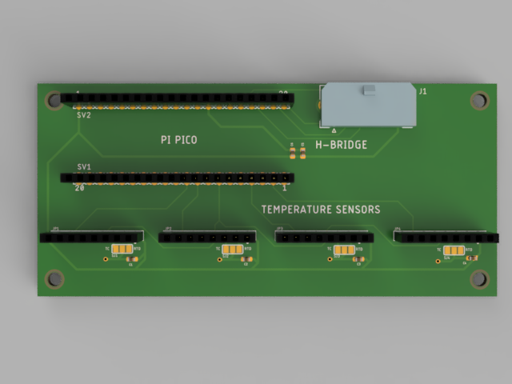
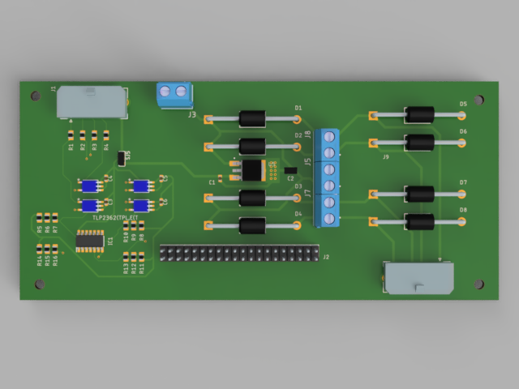
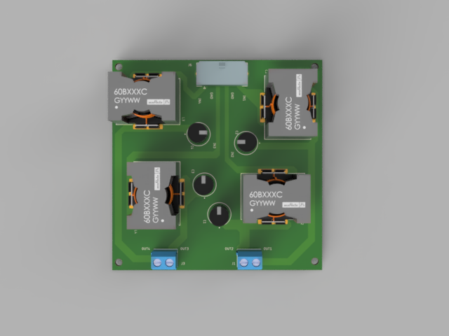

Components¶
Off-the-Shelf Parts¶
The system utilises the following components:
Raspberry Pi Model B (3+/4), running Raspbian Buster, or newer - Raspberry Pi 4 Model B.
Official Raspberry Pi 7” Touchscreen Display - 7” Touchscreen Display.
Raspberry Pi Pico microcontroller - Raspberry Pi Pico.
Micro USB cable
Breakout boards from Adafruit, including:
2x Adafruit MAX31865 RTD Temperature Sensor boards - MAX31865 RTD Sensor
2x Adafruit MAX31856 Thermocouple Amplifier boards - MAX31856 Thermocouple Amplifier
Temperature sensors:
2x 4-wire PT100 RTD sensors - PT100 RTD Sensor
2x Type T thermocouples - Type T Thermocouple
1x Type (K/T) thermocouple - Type (K/T) Thermocouple
Motor Controller board by Cytron Technologies: HAT-MDD10 - HAT-MDD10
2x 12V DC motors - 12V DC Motor
An adjustable DC Power Supply, capable of providing up to 20V at 5A or greater
A capable thermoelectric module (TEC) device, able to pump >10W of heat
{kind=link}
Interface boards¶
A set of PCB interface boards are used to connect the microcontroller, breakout boards and other components, the files of which are available in the Github repository.
These consist of the following:
Microcontroller and temperature sensor interface board
Interfaces with the Raspberry Pi Pico microcontroller and the temperature sensor breakout boards.
{kind=link}
Motor controller interface board
Interfaces with the HAT-MDD10 motor controller board, via the 40-pin GPIO header, as well as the DC power supply.
{kind=link}
Thermoelectric module interface board
Interfaces with the thermoelectric module(s)
{kind=link}
The boards connected to each other via Molex 6-pin Micro-Fit cables, available here.